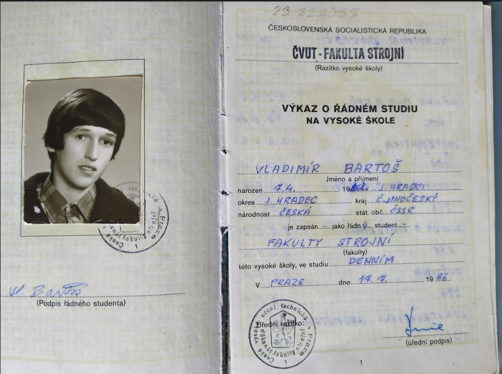
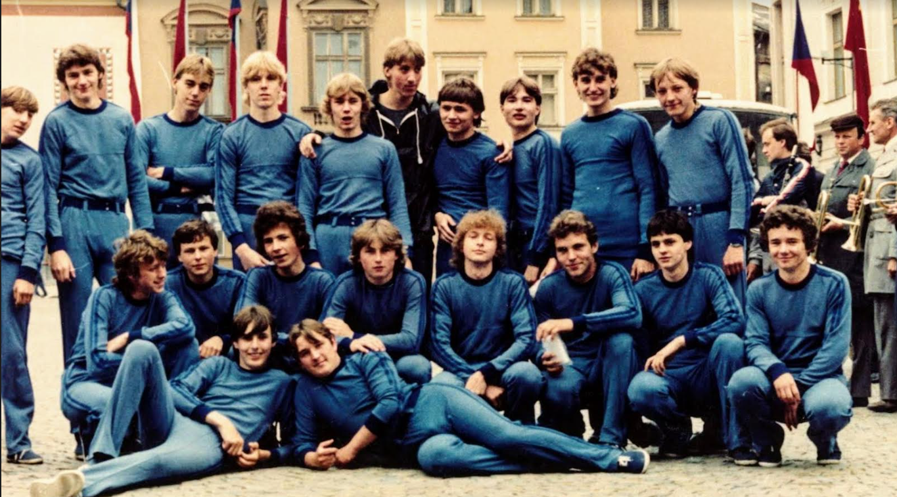

Vítejte na našem webu věnovaném sametové revoluci. Tento web vám poskytne základní informace o této události.
Sametová revoluce byla klíčovou událostí v nedávné historii Československa. Byla to období masových protestů a politických změn, které nakonec vedly k pádu komunistického režimu.
Během sametové revoluce došlo k mnoha klíčovým událostem, jako například studentský pochod dne 17. listopadu 1989, stávky a demonstrace v Praze a dalších částech země, a konečně k vyjednávání mezi opozičními silami a komunistickým režimem.
Sametová revoluce zanechala trvalý otisk na české a slovenské společnosti. Přinesla svobodu, demokracii a nové možnosti pro budoucnost země.
